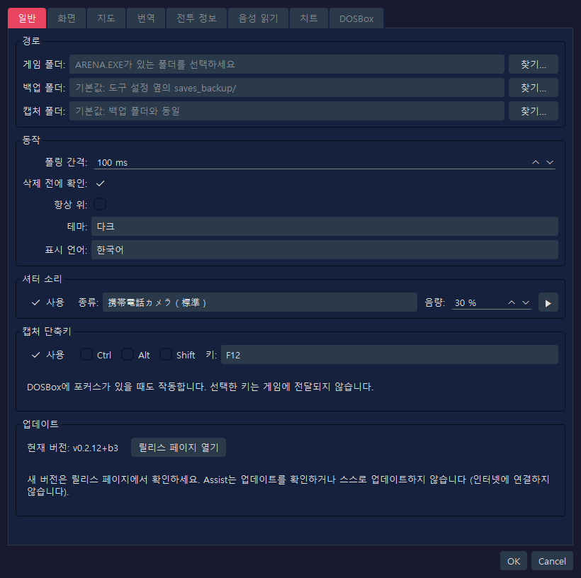
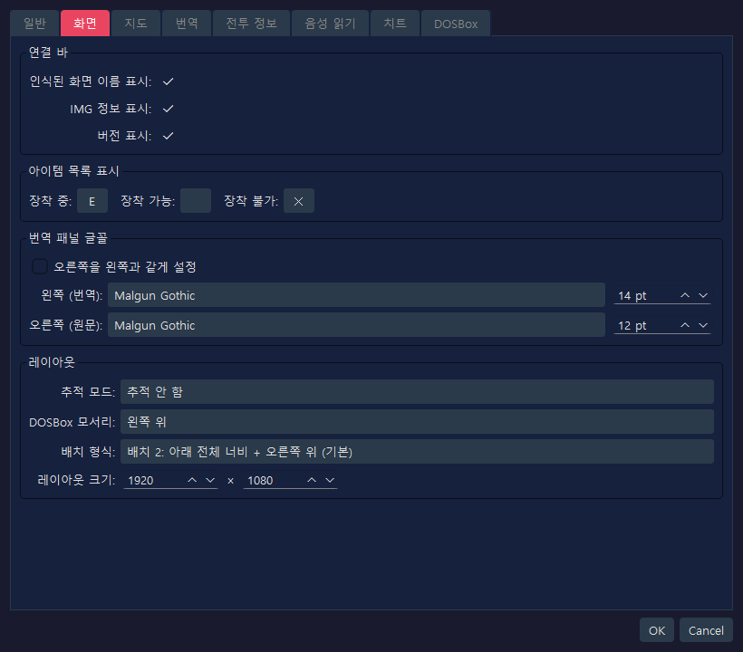
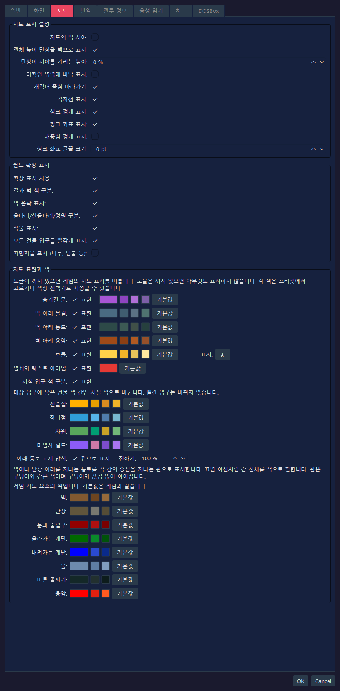
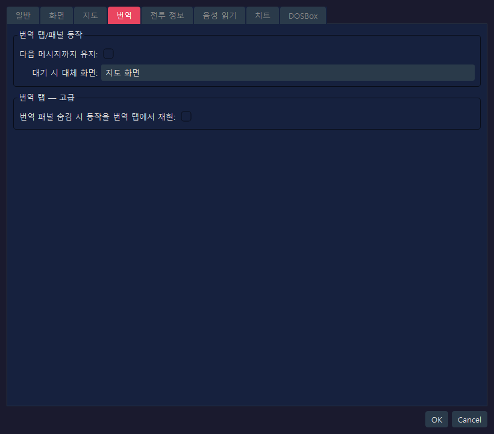
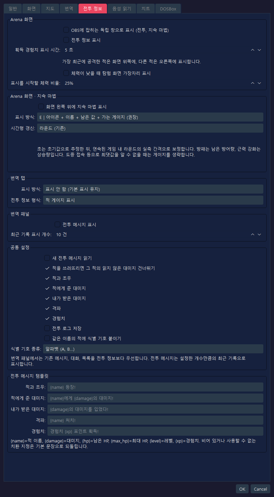
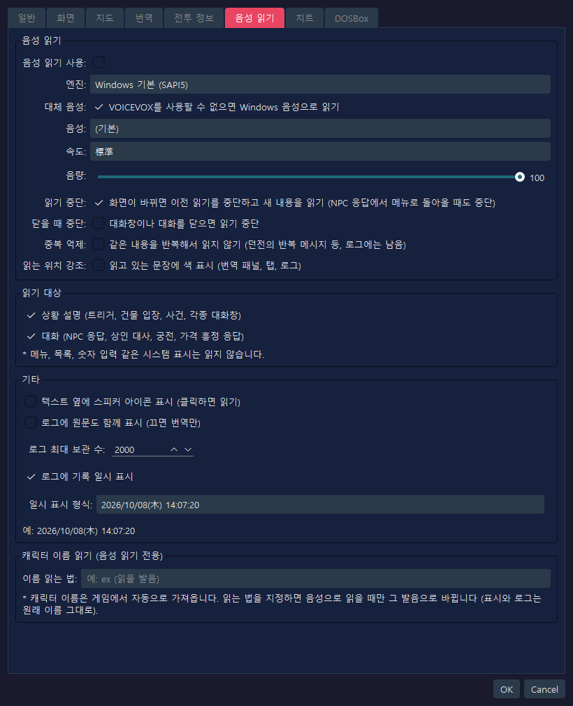
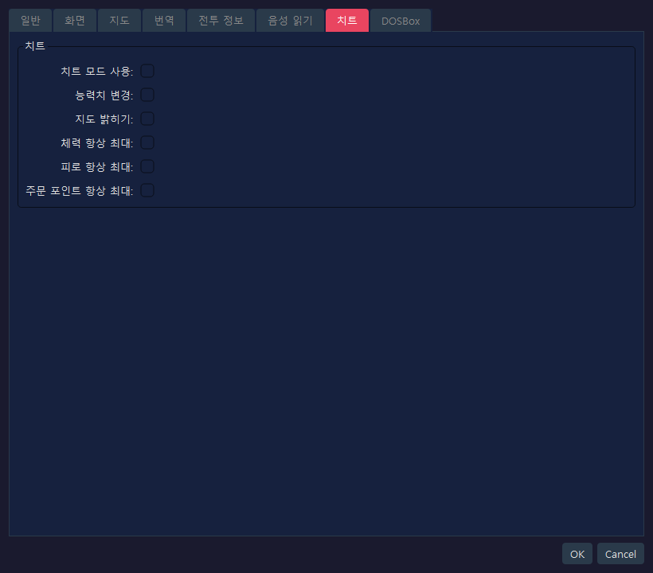
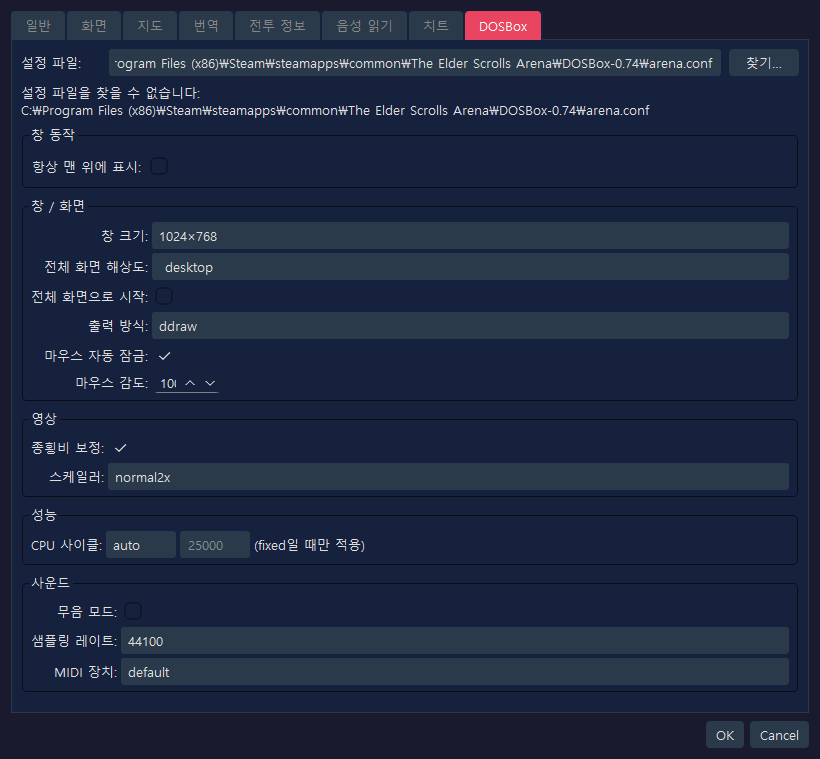

이 페이지는 RTESArenaAssist 설정 대화창의 각 탭 캡처 화면과 각 UI 요소의 설명을 보여 줘요.
이미지는 기본 설정, 표시 언어, 기본 테마인 "다크" 상태의 설정 대화창을 캡처한 거예요.
DOSBox 탭의 값에는 Assist 자체의 설정 파일뿐 아니라 기본 경로의 arena.conf에서 읽어 온 내용도 반영돼요. 사용 환경의 arena.conf가 다르면 표시되는 값도 달라져요.
이 탭에서는 경로, 기본 동작, 셔터 소리, 캡처 단축키를 설정하고 버전을 확인할 수 있어요.

| 항목 | 기본값 | 설명 |
|---|---|---|
게임 폴더 | 비어 있음 | Arena의 ARENA.EXE와 세이브 파일이 있는 폴더예요. 설정하지 않으면 세이브 관리와 게임 데이터 읽기를 사용할 수 없어요 |
백업 폴더 | 비어 있음 | 세이브 백업을 보관하는 위치예요. 비어 있으면 도구의 설정 파일 옆에 있는 saves_backup/을 사용해요 |
캡처 폴더 | 비어 있음 | 스크린샷을 저장하는 위치예요. 비어 있으면 백업 폴더와 같은 폴더를 사용해요 |
찾아보기... | - | 각 폴더를 선택해요 |
| 항목 | 기본값 | 설명 |
|---|---|---|
폴링 간격 | 100 ms | DOSBox 화면과 메모리 상태를 확인하는 간격이에요. 짧은 메시지도 놓치지 않도록 기본값을 짧게 잡았어요 |
삭제 전에 확인 | 켜짐 | 캡처나 백업을 삭제할 때 확인 대화창을 표시해요 |
항상 맨 위에 표시 | 꺼짐 | Assist 메인 창을 다른 창보다 앞에 표시해요 |
테마 | 다크 | UI의 색 테마를 선택해요 |
표시 언어 | 자동 (시스템 언어) | UI 언어예요. 비어 있으면 시스템 언어에서 자동으로 감지하며, 변경 사항은 앱을 다시 시작한 뒤에 적용돼요 |
| 항목 | 기본값 | 설명 |
|---|---|---|
사용 | 켜짐 | 스크린샷을 저장할 때 효과음을 재생해요 |
종류 | 휴대폰 카메라 (표준) | 재생할 셔터 소리예요. 표준, 짧은 버전, 두 번, 고음 강조, 부드러운 소리 중에서 고를 수 있어요 |
음량 | 30 % | 셔터 소리의 재생 음량이에요 |
▶ | - | 선택한 셔터 소리를 미리 들어 봐요 |
게임 화면(DOSBox)에 포커스가 있는 상태에서 키만 눌러도 캡처를 저장할 수 있어요. 몇 초 뒤에 사라지는 메시지를 캡처할 때 사용하세요.
| 항목 | 기본값 | 설명 |
|---|---|---|
사용 | 켜짐 | 캡처용 단축키를 사용해요 |
Ctrl / Alt / Shift | 꺼짐 | 켜면 보조 키를 함께 눌러야 해요 |
키 | F12 | 사용할 키예요. F5부터 F12, PrintScreen, Pause, ScrollLock, Insert, Home, End, PageUp, PageDown 중에서 고를 수 있어요 |
| 항목 | 기본값 | 설명 |
|---|---|---|
현재 버전 | - | 사용 중인 Assist의 버전이에요 |
릴리스 페이지 열기 | - | Assist의 릴리스 페이지(Releases 목록)를 브라우저로 열어요. 새 버전이 있는지 여기서 확인하세요 |
Assist는 인터넷에 연결하지 않으므로 업데이트를 확인하거나 스스로 업데이트하지 않아요.
이 탭에서는 연결 바, 아이템 목록의 장비 표시, 번역 패널 글꼴, 레이아웃을 설정해요.

| 항목 | 기본값 | 설명 |
|---|---|---|
인식된 화면 이름 표시 | 켜짐 | 현재 인식된 화면의 이름을 연결 바에 표시해요 |
IMG 정보 표시 | 켜짐 | 감지 중인 IMG 정보를 연결 바에 표시해요 |
버전 표시 | 켜짐 | 앱 버전을 연결 바와 상태 표시줄에 표시해요 |
| 항목 | 기본값 | 설명 |
|---|---|---|
장착 중 | E | 장착 중인 아이템의 왼쪽 끝에 표시되는 한 글자 표시예요 |
장착 가능 | 비어 있음 | 장착할 수 있는 아이템의 표시예요. 기본값이 비어 있어서 아무것도 표시되지 않아요 |
장착 불가 | ✕ | 장착할 수 없는 아이템의 왼쪽 끝에 표시되는 한 글자 표시예요 |
| 항목 | 기본값 | 설명 |
|---|---|---|
오른쪽을 왼쪽과 같게 설정 | 꺼짐 | 켜면 원문 쪽의 글꼴과 크기를 번역 쪽과 똑같이 맞춰요 |
왼쪽 (번역) | 앱 기본값 / 14 pt | 번역문에 사용하는 글꼴과 크기예요. 저장된 글꼴 이름이 없으면 사용 환경에 맞는 앱 기본 글꼴이 선택돼요 |
오른쪽 (원문) | 앱 기본값 / 12 pt | 영어 원문에 사용하는 글꼴과 크기예요. 맞추기가 꺼져 있으므로 번역 쪽과 따로 설정할 수 있어요 |
| 항목 | 기본값 | 설명 |
|---|---|---|
추적 모드 | 추적 안 함 | DOSBox나 Assist 중 한쪽을 움직였을 때 다른 쪽이 따라가게 할지 선택해요 |
DOSBox 모서리 | 왼쪽 위 | 한 번에 배치하거나 레이아웃 모드를 쓸 때 DOSBox를 놓는 화면의 기준 모서리예요 |
배치 형식 | 배치 2: 아래 전체 너비 + 오른쪽 위 (기본) | DOSBox와 Assist 패널이 영역을 나누는 방식이에요. 배치 2는 오른쪽 위와 아래 전체 너비를 사용하는 표준 배치예요 |
레이아웃 크기 | 1920 x 1080 | 레이아웃 모드에서 전체 캔버스의 크기예요 |
이 탭에서는 탐험 지도와 필드 확장 표시를 설정해요.

| 항목 | 기본값 | 설명 |
|---|---|---|
지도의 벽 시야 | 꺼짐 | 끄면 벽 너머의 미확인 영역은 지도에 기록되지 않아요. 켜면 Arena 원작에 가까워져서 벽 너머로 보이는 영역도 기록돼요 |
전체 높이 단상을 벽으로 표시 | 켜짐 | 바닥에서 천장까지 가득 찬 단상을 벽 색으로 표시해요. 바뀌는 것은 표시 분류뿐이며 시야가 가려지는 방식에는 영향이 없어요. 전체 높이가 아닌 단상은 그대로 단상으로 표시돼요 |
단상이 시야를 가리는 높이 | 0 % | 천장 높이를 100%로 했을 때, 윗면이 이 높이 이상인 단상이 지도에서 시야를 가려요. 0%에서는 모든 단상이 시야를 가려요 |
미확인 영역에 바닥 표시 | 꺼짐 | 끄면 탐색한 칸에만 바닥 색이 표시되어 미확인 영역의 모양이 드러나지 않아요. 켜면 지도 전체가 양피지 색으로 표시돼요 |
캐릭터 중심 따라가기 | 켜짐 | 캐릭터가 움직이면 지도가 자동으로 캐릭터를 따라가요. 캐릭터가 멈춰 있는 동안에는 직접 이동할 수 있어요 |
격자선 표시 | 켜짐 | 칸의 경계에 격자선을 표시해요 |
청크 경계 표시 | 켜짐 | 필드 지도에서 청크(64칸 단위)의 경계를 강조해요 |
청크 좌표 표시 | 켜짐 | 필드 지도에서 각 청크의 좌표를 표시해 현재 위치를 파악하기 쉽게 해요 |
재중심 경계 표시 | 꺼짐 | 필드 지도의 재중심 경계를 점선으로 표시해요. 조사나 위치 확인을 위한 보조 표시예요 |
청크 좌표 글꼴 크기 | 10 pt | 청크 좌표 라벨의 글자 크기예요 |
| 항목 | 기본값 | 설명 |
|---|---|---|
확장 표시 사용 | 켜짐 | 필드 지도 확장 표시의 마스터 스위치예요. 끄면 게임 내 자동 지도와 비슷한 표시가 돼요 |
길과 벽 색 구분 | 켜짐 | 지나갈 수 있는 길과 건물·벽처럼 지나갈 수 없는 부분을 서로 다른 색으로 그려요 |
벽 윤곽 표시 | 켜짐 | 벽과 가장자리 지형의 윤곽을 표시해요 |
울타리/산울타리/정원 구분 | 켜짐 | 울타리, 산울타리, 정원 같은 가장자리 지형을 이어지는 선으로 구분해요 |
작물 표시 | 켜짐 | 옥수수나 밭 같은 작물을 전용 색이나 표시로 나타내요 |
모든 건물 입구를 빨갛게 표시 | 켜짐 | 집, 선술집, 사원, 성문 등의 입구도 빨갛게 표시해요. 지하 묘지, 탑, 던전의 입구는 이 설정과 관계없이 빨갛게 표시돼요 |
지형지물 표시 (나무, 덤불 등) | 꺼짐 | 나무, 덤불, 바위, 무덤, 폐허 등을 간단한 표시로 겹쳐 그려요. 수가 많아 지도를 읽기 어려워지므로 기본값은 꺼짐이에요 |
게임의 지도는 벽 아래를 지나는 통로 같은 것들을 구분하지 않고 그려요. 여기서는 그런 요소를 구분해서 그릴지, 그리고 각 요소의 색을 설정해요. 각 행에서 "표현"을 끄면 그 요소는 게임 지도와 같은 표시로 돌아가요 (보물을 끄면 아무것도 표시되지 않아요).
| 항목 | 기본값 | 설명 |
|---|---|---|
숨겨진 문 | 켜짐 | 발견한 숨겨진 문을 전용 색으로 표시해요. 발견하기 전에는 벽으로 남아 있어요 |
벽 아래 물길 | 켜짐 | 벽 아래를 지나는 물길을 전용 색으로 표시해요. 실제로 그곳을 지나가 드러내기 전에는 표시되지 않아요 |
벽 아래 통로 | 켜짐 | 벽 아래를 지나는 통로를 표시해요. 실제로 그곳을 지나가 드러내기 전에는 표시되지 않아요 |
벽 아래 용암 | 켜짐 | 벽 아래를 지나는 용암을 전용 색으로 표시해요. 실제로 그곳을 지나가 드러내기 전에는 표시되지 않아요 |
보물 | 켜짐 | 보물을 얻은 곳에 표시를 겹쳐 그려요. 오른쪽 입력란에서 표시 문자를 바꿀 수 있어요. 치트 탭의 "지도 밝히기"가 켜져 있는 동안에는 얻었는지와 관계없이 보물이 있는 모든 곳이 표시돼요 |
열쇠와 퀘스트 아이템 | 켜짐 | 보물 중 열쇠와 퀘스트 아이템의 표시를 다른 색으로 나타내요. 끄면 보물과 같은 색으로 표시돼요. 보물이 꺼져 있으면 표시되지 않아요 |
시설 입구 색 구분 | 켜짐 | 도시 지도에서 선술집, 장비점, 사원, 마법사 길드의 입구에 닿은 건물 색 칸을 시설별 색으로 바꿔요. 빨간 입구의 색은 바뀌지 않아요. 각 시설의 색은 아래 입력란에서 바꿀 수 있어요 |
아래 통로 표시 방식 | 관으로 표시 / 진하기 100 % | 벽이나 단상 아래를 지나는 통로를 각 칸의 중심을 지나는 관으로 표시해요. 끄면 이전처럼 칸 전체를 색으로 칠해요. 관의 색은 구덩이와 같으며 구덩이와 끊김 없이 이어져요. 진하기를 낮추면 관이 더 은은해져요 |
각 항목 오른쪽의 색 견본을 클릭하면 원하는 색을 고를 수 있어요. 옆의 작은 버튼은 고르기 쉬운 추천 색이고, 기본값은 원래 색으로 되돌리는 버튼이에요. 게임 자체의 요소인 벽, 단상, 문과 출입구, 계단(올라가는 계단과 내려가는 계단), 물, 마른 골짜기, 용암의 색도 같은 방식으로 바꿀 수 있어요 (기본값은 게임과 같은 색이에요).
이 탭에서는 번역 패널과 번역 탭의 보조 표시를 설정해요.

| 항목 | 기본값 | 설명 |
|---|---|---|
다음 메시지까지 유지 | 꺼짐 | 트리거나 오브젝트 상호작용 메시지를 다음 메시지가 올 때까지 번역 패널에 남겨 둘지 정해요 |
대기 시 대체 화면 | 지도 화면 | 탐험 중에 번역할 내용이 없을 때 번역 탭 전체에 무엇을 표시할지 고르세요. 기본값은 지도 화면이 우선이에요 |
| 항목 | 기본값 | 설명 |
|---|---|---|
번역 패널 숨김 시 동작을 번역 탭에서 재현 | 꺼짐 | 켜면 번역 패널을 숨겼을 때처럼 번역 결과와 대화 메시지를 번역 탭에 표시해요. 검증용 고급 설정이에요 |
기본 번역의 일부를 내 번역으로 바꾸거나 새 언어를 추가할 수 있습니다.
템플릿 내보내기에서 언어를 고르고(새 언어를 만들 때는 (새 언어용 빈 템플릿)을 고릅니다) 내보내기...를 눌러 JSON 파일을 저장합니다. 영어 원문 함께 넣기를 켜면 영어 원문이 함께 들어갑니다(게임 본문의 원문은 게임 폴더를 설정하고 사전을 만든 환경에서만 들어갑니다). 번역 폴더(아래 참조) 밖에 저장하세요.text를 고칩니다. text가 비어 있는 항목은 기본 번역(새 언어에서는 meta.fallback 언어의 번역)이 그대로 쓰입니다. 키와 %xx, {name} 같은 치환 항목은 바꾸지 마세요(기준 번역에 없는 치환 항목이나 <, >가 들어 있는 항목은 불러오지 않습니다). source(영어 원문)와 ref(참고용 번역)는 불러올 때 쓰이지 않습니다.lang(언어 코드, 예: tr)과 meta.display_name(언어 목록에 표시할 이름)을 반드시 적습니다. meta.fallback은 번역되지 않은 항목에 쓰는 기본 제공 언어(기본값은 en)이고, meta.direction을 rtl로 하면 오른쪽에서 왼쪽으로 표시합니다.번역 파일 가져오기에서 가져오기...를 눌러 편집한 파일을 선택합니다. 검사를 통과하면 가져옵니다. 새 언어는 '일반' 탭의 표시 언어에 추가됩니다. 앱을 다시 시작한 뒤에 적용됩니다.기본 제공 언어의 템플릿에는 모든 항목에 현재 번역이 들어 있습니다. 바꾸지 않는 항목은 통째로 지우거나 text를 비워 두세요. 남겨 둔 항목은 내 번역으로 고정되어, 앱을 업데이트해 기본 번역이 개선되어도 반영되지 않습니다.
예 1: 기본 제공 독일어 번역에서 한 항목만 바꿉니다(적은 항목만 바뀝니다).
{
"schema": "rtesaa.user_translation",
"schema_version": 1,
"lang": "de",
"texts": {
"ui_app": {
"settings.title": "Meine Einstellungen"
}
}
} |
예 2: 새 언어(튀르키예어). ref는 참고용이며 불러올 때 쓰이지 않습니다.
{
"schema": "rtesaa.user_translation",
"schema_version": 1,
"lang": "tr",
"meta": { "display_name": "Türkçe", "fallback": "en", "direction": "ltr" },
"texts": {
"ui_app": {
"settings.title": { "ref": "Settings", "text": "Ayarlar" }
}
}
} |
가져온 파일은 불러온 파일 목록에 나타납니다. 파일을 선택하고 삭제를 누르면 기본 번역으로 돌아갑니다(새 언어는 지워집니다). 폴더 열기는 설정 파일과 같은 위치의 translations 폴더를 엽니다. 이 폴더에 둔 JSON은 시작할 때 자동으로 불러옵니다. 추가한 언어에서는 매뉴얼 같은 문서가 영어로 표시됩니다.
전투와 지속 마법을 표시할 위치를 따로 설정해요. 새로 추가된 표시, 음성 읽기, 저장 기능은 기본적으로 꺼져 있어요. 이전 개발 버전에서 저장한 설정 값은 그대로 이어받아요. 표시되는 텍스트는 일본어, 영어, 스페인어, 독일어, 프랑스어, 이탈리아어, 러시아어를 지원해요.

| 항목 | 기본값 | 설명 |
|---|---|---|
OBS에 잡히는 독립 창으로 표시 (전투, 지속 마법) | 꺼짐 | 전투 정보와 지속 마법을 OBS의 창 캡처로 선택할 수 있는 하나의 창에 모아요 |
전투 정보 표시 | 꺼짐 | 조우해서 현재 시야에 있는 적 중 가장 최근에 공격을 주고받은 적은 화면 위쪽에, 조우한 다른 살아 있는 적은 시야 밖이라도 오른쪽에 표시해요. 체력, 피로, 마력, 준 대미지와 격파를 확인할 수 있어요. 받은 대미지는 탐험 영역의 아래쪽 가장자리에 표시돼요 |
획득 경험치 표시 시간 | 5 초 | 경험치를 얻은 순간 오른쪽 아래에 경험치를 표시하고, 지정한 시간(초)이 지나면 각 틀을 지워요. 연달아 얻으면 오래된 틀은 왼쪽으로 밀려나요 (1~60초) |
체력이 낮을 때 탐험 화면 가장자리 표시 | 꺼짐 | 체력이 지정한 비율 이하로 떨어지면 탐험 화면의 가장자리가 은은하게 깜박여요. 전투 정보의 적 표시를 사용하지 않아도 켤 수 있어요 |
표시를 시작할 체력 비율 | 25% | 체력 저하 테두리가 표시되기 시작하는 비율이에요 (최대 체력의 1~99%) |
받은 대미지 표시는 발생한 지 약 5초 뒤에 자동으로 사라져요. 어느 장소에서든 적의 시야에도 같은 규칙을 사용해요. 지도나 좌표가 확정되지 않았을 때는 적을 추측으로 표시하지 않아요.
OBS로 녹화하려면 이 설정을 켠 다음 "창 캡처"에서 RTESArenaAssist 오버레이 창(창 제목은 모든 언어에서 일본어로 표시돼요)을 선택하고, 투명도를 허용해서 게임 영상 위에 겹쳐 놓으세요. 전투 정보와 지속 마법이 같은 소스에 나타나요.
| 항목 | 기본값 | 설명 |
|---|---|---|
화면 왼쪽 위에 지속 마법 표시 | 꺼짐 | 빛, 방패, 근력 강화, 화염 저항, 부유의 상태를 표시해요 |
표시 방식 | E | 아이콘 + 이름 + 남은 값 + 가는 게이지 (권장) | A "이름 + 남은 값", B "이름 + 가로 게이지", C "아이콘 + 가로 게이지", D "아이콘 + 시계 방향 어둡게", E "아이콘 + 이름 + 남은 값 + 가는 게이지", F "소형 칩" 중에서 고르세요 |
시간형 갱신 | 라운드 (기존) | 빛, 화염 저항, 부유를 라운드 단위로 갱신할지, 1초마다 추정한 초 단위로 갱신할지 선택해요. 초는 게임 내 진행 간격으로 보정하므로, DETAIL처럼 진행 속도가 바뀌면 반드시 일정한 배수가 되지는 않아요 |
방패는 남은 방어량을, 근력 강화는 상승량을 표시해요. 도중에 접속하는 등 최댓값을 확인할 수 없을 때는 게이지가 생략될 수 있어요. 초 표시는 추정값이며, 효과가 끝나는 시점은 게임 내 상태를 따라요.
| 항목 | 기본값 | 설명 |
|---|---|---|
표시 방식 | 표시 안 함 (기본 표시 유지) | 기본 표시 유지, 기본 표시와 전투 정보 함께 사용, 전투 정보 전체 표시 중에서 고르세요 |
전투 정보 형식 | 적 게이지 표시 | 전투 정보를 표시할 때 문자 정보로 할지 적 게이지 표시로 할지 선택해요 |
| 항목 | 기본값 | 설명 |
|---|---|---|
전투 메시지 표시 | 꺼짐 | 전투 문장을 번역 패널에 표시해요. 기존 메시지, 대화, 목록이 나타나면 그쪽이 우선이에요 |
최근 기록 표시 개수 | 10 건 | 가장 최근의 전투 문장을 1~50줄 표시해요. 개수를 넘으면 가장 오래된 줄이 지워지고 새 줄이 추가돼요 |
| 항목 | 기본값 | 설명 |
|---|---|---|
새 전투 메시지 읽기 | 꺼짐 | 음성 읽기가 전체적으로 켜져 있을 때, 새 전투 문장을 발생한 순서대로 읽어요. 최근의 같은 문장을 제외하지 않으며, 다음 대미지가 앞의 읽기를 끊지 않아요 |
적을 쓰러뜨리면 그 적의 읽지 않은 대미지 건너뛰기 | 켜짐 | 적을 쓰러뜨리면 재생 중인 그 적에게 준 대미지와 받은 대미지, 그리고 아직 읽지 않은 부분을 끊어요. 다른 적에 대한 읽기는 계속돼요 |
전투 로그 저장 | 꺼짐 | 전투 기록을 일반 로그와 별도로 저장해요. 기록이 있을 때만 로그 탭에 전환 스위치가 표시돼요 |
같은 이름의 적에 식별 기호 붙이기 | 꺼짐 | 이름이 같은 적이 여러 명일 때만 이름 뒤에 구별용 기호를 붙여요 |
식별 기호 종류 | 알파벳 (A, B…) | A, B… 또는 1, 2… 중에서 고르세요 |
전투 메시지 템플릿 | 언어별 기본 문장 | 적과 조우, 적에게 준 대미지, 내가 받은 대미지, 격파, 경험치의 문장을 편집해요. 비어 있거나 사용할 수 없는 치환 지정은 기본 문장으로 되돌아가요 |
이 탭에서는 번역문 음성 읽기, 읽기 대상, 로그 표시, 캐릭터 이름 읽기를 설정해요.

| 항목 | 기본값 | 설명 |
|---|---|---|
음성 읽기 사용 | 꺼짐 | 번역문을 소리 내어 읽는 기능 전체를 켜요 |
엔진 | Windows 기본 (SAPI5) | 읽기 엔진을 선택해요. 로컬 VOICEVOX 엔진이 실행 중이면 VOICEVOX를 고를 수 있어요 |
대체 음성 | 켜짐 | VOICEVOX를 선택했지만 사용할 수 없을 때, 읽지 못한 문장을 Windows 음성으로 읽어요. 끄면 읽지 않아요 |
음성 | (기본) | 엔진이 Windows 기본 (SAPI5)일 때 표시돼요. 사용할 SAPI 음성이에요. (기본)이면 OS의 기본 음성을 사용해요 |
캐릭터 | 스타일 ID 0의 캐릭터 | 엔진이 VOICEVOX일 때 표시돼요. 읽기에 사용할 VOICEVOX 캐릭터예요 |
스타일 | 스타일 ID 0 | 엔진이 VOICEVOX일 때 표시돼요. 선택한 캐릭터의 음성 스타일이에요 |
🔊 테스트 재생 | - | 엔진이 VOICEVOX일 때 표시돼요. 선택한 캐릭터와 스타일로 짧은 문장을 시험 삼아 읽어요 |
속도 | 표준 | 읽는 속도예요 |
음량 | 100 | 읽는 음량이에요. 0~100 범위로 설정하세요 |
읽기 중단 | 켜짐 | 화면이 바뀌면 이전 읽기를 중단하고 새 내용을 읽어요. NPC 응답에서 메뉴로 돌아올 때도 중단해요 |
닫을 때 중단 | 꺼짐 | 대화창이나 대화를 닫으면 진행 중인 읽기를 중단해요 |
중복 억제 | 꺼짐 | 같은 내용(던전의 반복 메시지 등)을 되풀이해서 읽지 않아요. 로그에는 남아요 |
읽는 위치 강조 | 꺼짐 | 읽고 있는 문장에 색을 표시해요 (번역 패널, 번역 탭, 로그) |
VOICEVOX를 찾을 수 없으면 "VOICEVOX를 실행하면 선택할 수 있습니다 (127.0.0.1:50021)."라는 안내가 표시돼요. VOICEVOX를 실행하고 설정 대화창을 다시 열면 캐릭터와 스타일을 고를 수 있어요.
| 항목 | 기본값 | 설명 |
|---|---|---|
상황 설명 (트리거, 건물 입장, 사건, 각종 대화창) | 켜짐 | 트리거, 건물 입장, 사건, 각종 대화창처럼 상황을 설명하는 문장을 읽기 대상으로 해요 |
대화 (NPC 응답, 상인 대사, 궁전, 가격 흥정 응답) | 켜짐 | NPC 응답, 상인 대사, 궁전, 가격 흥정 응답 같은 대화 문장을 읽기 대상으로 해요 |
메뉴, 목록, 숫자 입력 같은 시스템 표시는 읽지 않아요.
| 항목 | 기본값 | 설명 |
|---|---|---|
텍스트 옆에 스피커 아이콘 표시 (클릭하면 읽기) | 꺼짐 | 표시된 텍스트 옆에 스피커 아이콘을 표시해서, 클릭하면 읽어 줘요 |
로그에 원문도 함께 표시 (끄면 번역만) | 꺼짐 | 번역 로그에 번역과 함께 영어 원문도 표시해요. 끄면 번역만 표시돼요 |
로그 최대 보관 수 | 2000 | 저장하는 로그 항목 수의 상한이에요. 이를 넘은 오래된 로그는 자동으로 삭제돼요 |
로그에 기록 일시 표시 | 켜짐 | 로그 항목에 기록한 날짜와 시각을 표시해요 |
일시 표시 형식 | yyyy/MM/dd(aaa) HH:mm:ss | 로그 일시의 표시 형식이에요. 프리셋이나 사용자 지정 형식을 고를 수 있어요 |
| 항목 | 기본값 | 설명 |
|---|---|---|
이름 읽는 법 | 비어 있음 | 게임에서 자동으로 가져온 캐릭터 이름을, 음성으로 읽을 때만 지정한 읽는 법으로 바꿔요. 표시와 로그에는 원래 이름이 남아요 |
이 탭에서는 게임 내 값 변경이나 항상 최대 기능 같은 보조 기능을 설정해요.

| 항목 | 기본값 | 설명 |
|---|---|---|
치트 모드 사용 | 꺼짐 | 치트 기능 전체의 마스터 스위치예요. 이것만 켜서는 하위 설정을 켜지 않는 한 아무것도 바뀌지 않아요 |
능력치 변경 | 꺼짐 | 능력치 편집 같은 상태 변경을 허용해요 |
지도 밝히기 | 꺼짐 | 치트가 켜져 있는 동안 지도 전체를 표시해요 |
체력 항상 최대 | 꺼짐 | 치트가 켜져 있는 동안 현재 체력이 최대보다 낮으면 최대로 되돌려요 |
피로 항상 최대 | 꺼짐 | 치트가 켜져 있는 동안 현재 피로를 최대로 되돌려요 |
주문 포인트 항상 최대 | 꺼짐 | 치트가 켜져 있는 동안 현재 주문 포인트를 최대로 되돌려요 |
이 탭에서는 DOSBox의 arena.conf를 읽어 창 표시, 영상, 성능, 사운드를 설정해요.

| 항목 | 기본값 | 설명 |
|---|---|---|
설정 파일 | 기본 경로의 arena.conf | DOSBox의 설정 파일이에요. Assist 자체 설정이 비어 있으면 Arena Steam 버전의 표준 위치를 기본 경로로 읽어요 |
찾아보기... | - | 원하는 arena.conf를 선택해요 |
항상 맨 위에 표시 | 꺼짐 | DOSBox 창을 다른 창보다 앞에 표시해요 |
| 항목 | 기본값 | 설명 |
|---|---|---|
창 크기 | 1024×768 | windowresolution이에요. 프리셋에서 고르고, 사용자 지정을 고르면 W/H 숫자 입력란을 편집하세요 |
전체 화면 해상도 | desktop | fullresolution이에요. 전체 화면에서 사용할 해상도를 지정해요 |
전체 화면으로 시작 | 꺼짐 | fullscreen이에요. DOSBox를 전체 화면으로 시작할지 지정해요 |
출력 방식 | ddraw | output이에요. DOSBox의 렌더링 출력 방식이에요 |
마우스 자동 잠금 | 켜짐 | autolock이에요. 마우스를 DOSBox 화면 안에 자동으로 잠가요 |
마우스 감도 | 100 | sensitivity예요. DOSBox 안에서의 마우스 감도예요 |
| 항목 | 기본값 | 설명 |
|---|---|---|
종횡비 보정 | 켜짐 | aspect예요. 영상의 종횡비를 보정해요 |
스케일러 | normal2x | scaler예요. DOSBox의 화면 확대 필터예요 |
| 항목 | 기본값 | 설명 |
|---|---|---|
CPU 사이클 | fixed 25000 | cycles예요. CPU 에뮬레이션 속도를 지정해요. fixed일 때 오른쪽 숫자 입력란이 활성화돼요 |
| 항목 | 기본값 | 설명 |
|---|---|---|
무음 모드 | 꺼짐 | nosound예요. DOSBox의 소리를 꺼요 |
샘플링 레이트 | 44100 | rate예요. 믹서의 샘플링 레이트예요 |
MIDI 장치 | default | mididevice예요. MIDI 재생에 사용하는 장치예요 |